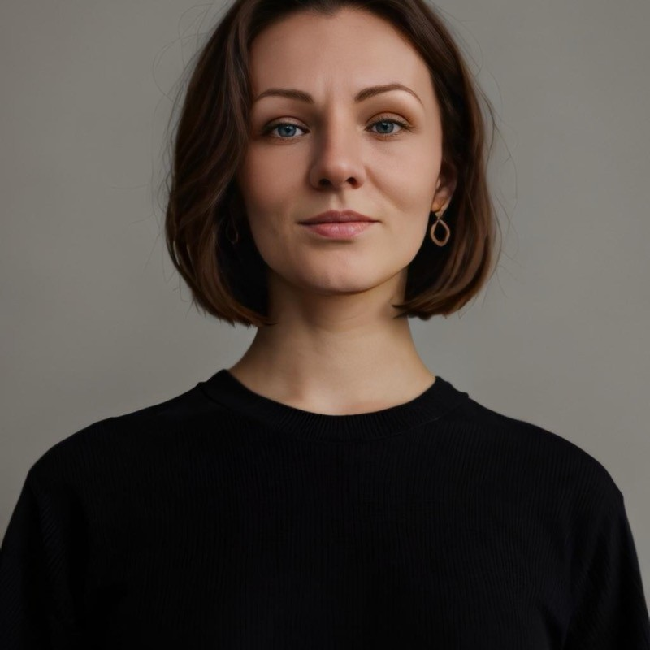
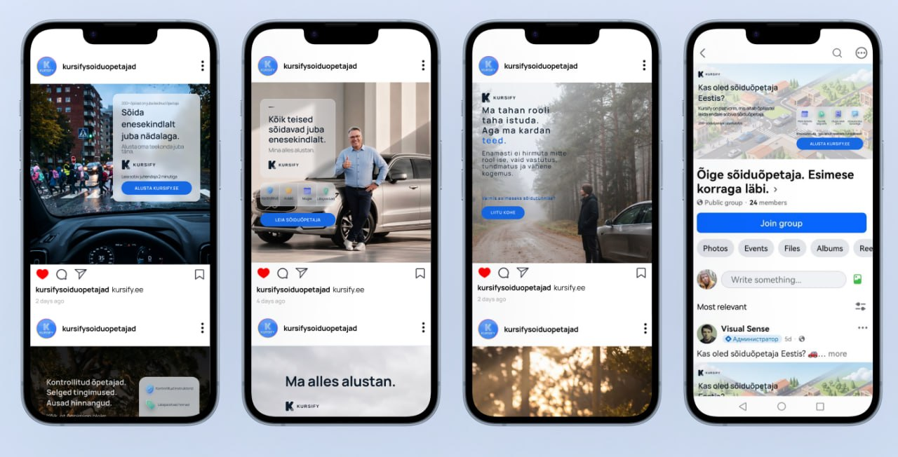
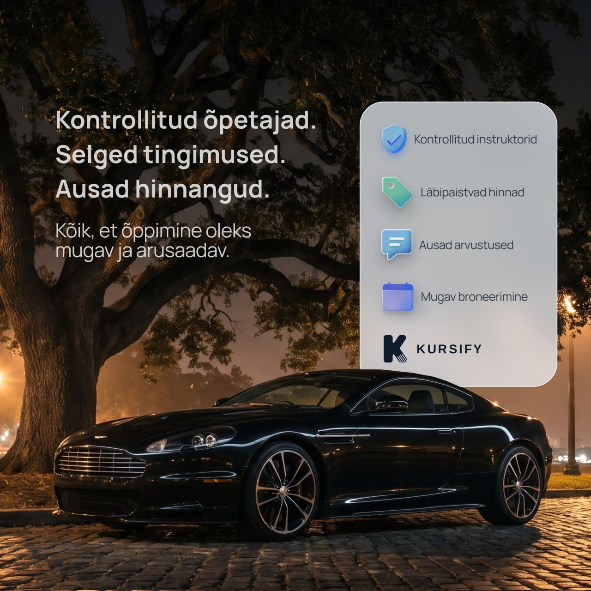
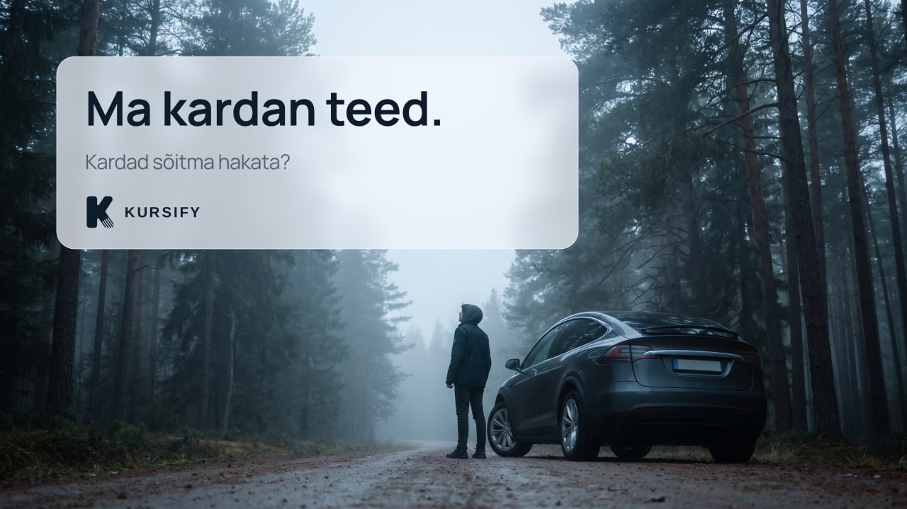
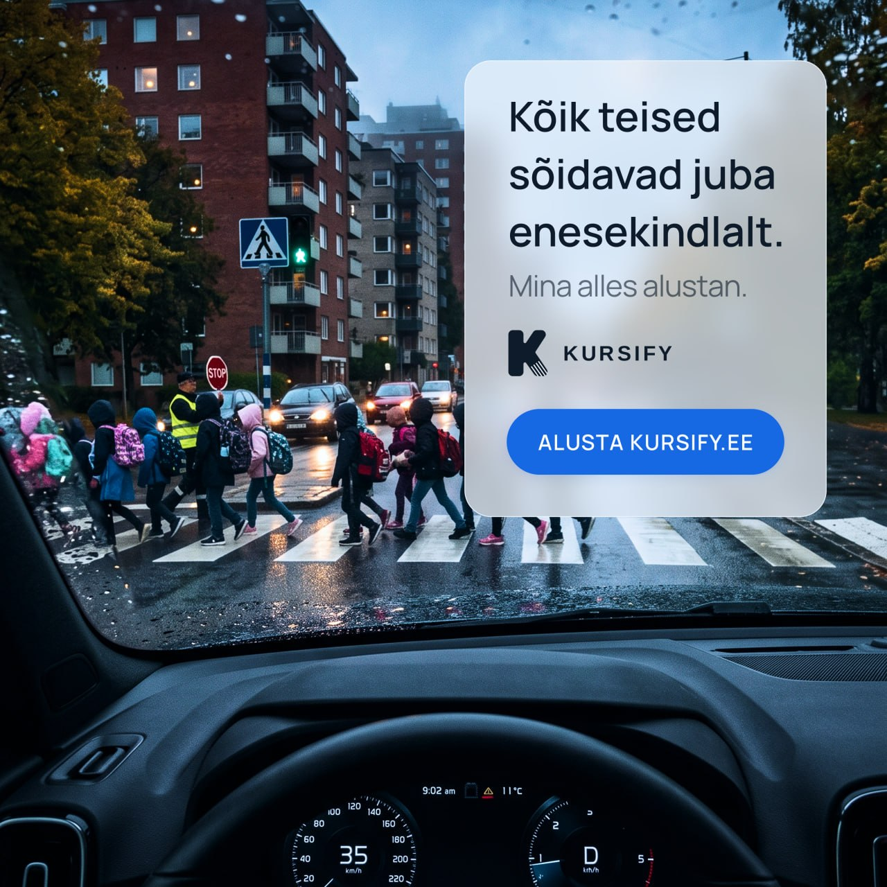

Turning Kursify's product ideas into clear social stories — from campaign concept to the final post.

While the Kursify team was building the core product, we noticed something: students often don't get enough practice between lessons with an instructor. That's how the idea for a new offering was born — juhendaja, an experienced driver who can accompany a student during extra practice.
My role was to explain this idea to the audience: a visual reference, a set of social banners, and a LinkedIn post — all designed so the concept reads in a few seconds.




While working on Kursify, we noticed another situation.
Sometimes a student just doesn't get enough practice between lessons. The lessons with an instructor are there, but building real confidence behind the wheel takes more time.
That's how the idea for a separate offering was born — juhendaja.
Juhendaja is an experienced driver who, meeting the necessary requirements, can accompany a student during extra practice.
We thought: what if Kursify made it easier to find such a person? A student could see the key information upfront, choose a suitable juhendaja, and get in touch.
We're still exploring this idea and want to understand how much users really need it.
Would this feature be useful to you?